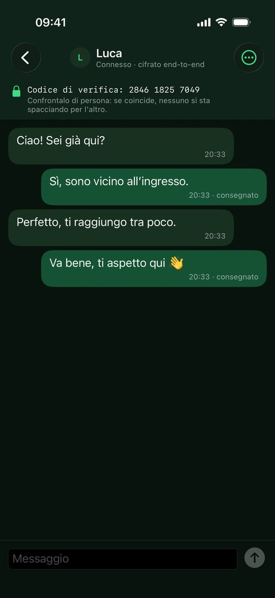
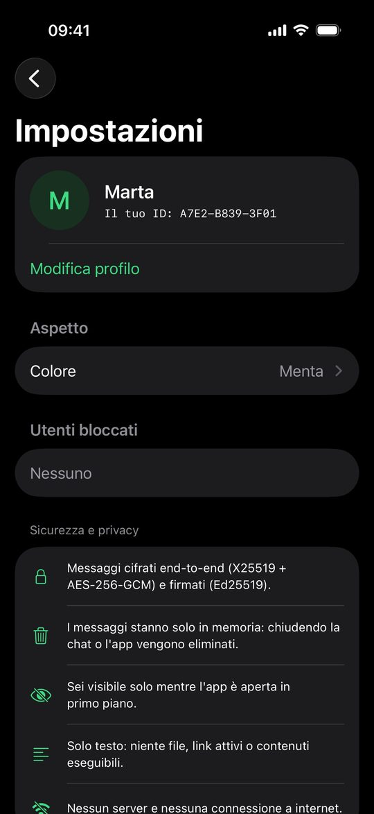

Stonechat
StonechatChat di prossimità via Bluetooth
Chatta con chi è a due passi
Stonechat ti mostra chi è nelle vicinanze e ti fa chattare direttamente da telefono a telefono. Niente internet, niente server, niente account.
- Gratuita
- Senza pubblicità
- Per iPhone
- 18+

Come funziona
Tre passi, nessuna registrazione
Non servono email, numero di telefono o password. Basta avere l’app aperta e il Bluetooth attivo.
Apri Stonechat
Scegli un nome e, se vuoi, un’immagine. Sul radar compaiono le persone vicine che hanno l’app aperta.
Chiedi di chattare
Tocca un profilo e invia una richiesta. La chat inizia solo se l’altra persona accetta.
Scrivi
I messaggi viaggiano cifrati direttamente tra i due telefoni. Quando chiudi la chat vengono eliminati.

Consenso
Nessuno ti scrive senza il tuo sì
Ogni conversazione parte da una richiesta. Dall’altra parte si decide.
- Accetta, rifiuta o blocca chi ti scrive.
- Dopo un rifiuto, le richieste successive vengono respinte automaticamente per circa due minuti.
- Chi blocchi non può più vederti né contattarti.

Cifratura end-to-end
Parli solo con chi hai davanti
I messaggi passano direttamente da un telefono all’altro, cifrati con X25519, AES-256-GCM e firme Ed25519.
- Un codice di verifica in cima alla chat: confrontatelo di persona per essere sicuri che nessuno si spacci per l’altro.
- I messaggi restano nella memoria dell’app e non vengono mai salvati su disco.
- Chiudendo la chat li elimini dal tuo telefono e l’altro telefono riceve la richiesta di eliminarli.

Il controllo è tuo
Decidi tu, sempre
Ogni scelta è a un tocco di distanza.
- Sospendi o chiudi una chat, blocca o segnala un profilo in qualsiasi momento.
- Quattro palette di colori: Menta, Azzurro, Viola e Corallo.
- Con un tocco cancelli tutto: profilo, chiavi, chat e lista dei bloccati.
Privacy per progettazione
Quello che non raccogliamo non può finire altrove
Stonechat è costruita per funzionare senza sapere niente di te.
Nessun account
Il profilo esiste solo sul tuo telefono. Nessuna email, nessun numero, nessuna password.
Nessun server
Le conversazioni passano via Bluetooth da telefono a telefono. Non c’è un archivio da nessuna parte.
Cifrata end-to-end
Solo i due telefoni della conversazione possono leggere i messaggi.
Visibile solo quando vuoi
Compari sul radar solo mentre Stonechat è aperta in primo piano. Chiudi l’app e sparisci.
Niente pubblicità
Nessun tracciamento e nessuna statistica d’uso. Non usiamo il GPS né la tua posizione.
Solo testo
Niente file, niente link attivi, niente contenuti eseguibili. I caratteri invisibili vengono rimossi.
Dove usarla
Ovunque ci sia qualcuno a pochi passi
Per parlare con chi hai intorno senza scambiarti il numero o i profili social. Funziona anche dove il telefono non ha campo.
- Eventi e concerti
- Fiere e conferenze
- Università
- Treni e viaggi
- Posti senza campo
Perché “Stonechat”
Lo stonechat è il saltimpalo, un uccellino il cui verso ricorda due sassi battuti tra loro. E in inglese a stone’s throw away, a un tiro di sasso, vuol dire proprio “a due passi”.
Domande frequenti
Prima di iniziare
Serve una connessione a internet?
No. Stonechat usa solo il Bluetooth, quindi funziona anche dove non c’è campo. Entrambe le persone devono avere l’app aperta e il Bluetooth attivo.
Quanto deve essere vicina l’altra persona?
Entro la portata del Bluetooth, che dipende dai telefoni e dall’ambiente: muri e folla la riducono. La distanza mostrata sul radar è indicativa.
Chi può vedermi?
Solo chi ha Stonechat aperta vicino a te, e solo mentre anche tu hai l’app aperta in primo piano. Gli altri vedono il nome e l’immagine che hai scelto, non il tuo numero né la tua posizione. Chi hai bloccato non ti vede.
I messaggi restano salvati?
No. Restano nella memoria dell’app mentre la chat è aperta e non vengono mai salvati su disco né inviati a un server.
Quanto costa?
Niente. Stonechat è gratuita, senza pubblicità e senza acquisti in-app.
In che lingua è l’app?
Per ora l’interfaccia è in italiano.
Serve aiuto?
Nella pagina di supporto trovi le risposte alle domande più comuni. Per assistenza, segnalazioni o richieste sulla privacy scrivi a jtengineeringsupport@gmail.com.
English
Chat with people a stone’s throw away
Stonechat shows you who is nearby and lets you chat directly from phone to phone over Bluetooth. No internet, no servers, no accounts.
- Nearby radar: people around you who have the app open, with an approximate distance.
- Chat by consent: a chat starts only if the other person accepts your request.
- Private by design: end-to-end encryption, a verification code to compare in person, and messages kept in memory only.
- You stay in control: suspend, close, block or report in one tap. Text only, no files or active links.
Free, no ads, for iPhone, for people aged 18 and over. The app is currently available in Italian. Need help? See our Support page or email jtengineeringsupport@gmail.com. Read our Privacy Policy and Terms of Use.